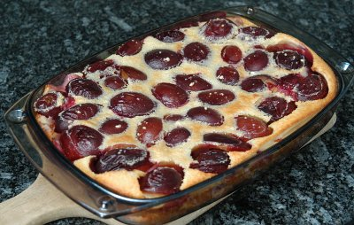

| Zutaten für 6 Personen: | |
| 700 g | Pflaumen |
| 175 g | Mehl |
| 175 g | Puderzucker |
| 4 | Eier |
| 1/4 l | Milch |
| 1 Prise | Salz |
Backform ausbuttern.
Die halbierten, entsteinten Früchte in der Form verteilen.
In einer Schüssel Mehl, Salz, Zucker, Eier und Milch zu einer Creme verarbeiten.
Die Creme über die Früchte giessen.
Nach 35 bis 40 Minuten im Ofen (200°C) warm servieren
Herbert Eigenmann, Code: ZWF
Gelang am 14.9.2009 ganz OK. Man muss aufpassen mit den Klümpchen. Kalte Milch und Mehl ist vielleicht das Problem. Irgendwie dazu sieben oder den Mixer anwerfen oder ein Sieb verwenden. RE
@LINKBACK_TAG@ @WAKELOCK@